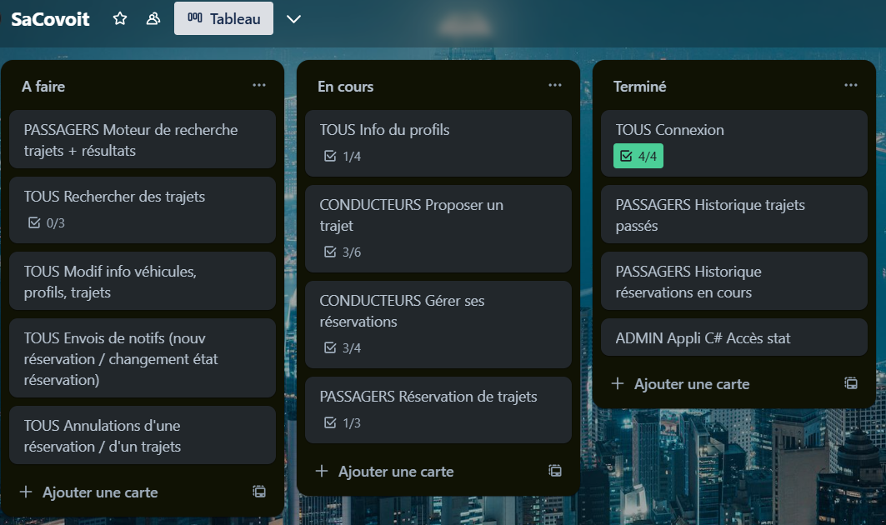

Projets et prodédures
BUT
- Poste de travail avec un dual boot Windows-Arch linux
Procédure
- Codage d'un jeu de pair en langage C
- Site de prise de rendez-vous en HTML, CSS et PHP
- Codage de l'algorithme d'Ariane avec un visuel en langage Java
BTS
- Site de recette en HTML, CSS et PHP
Lien projet
Lien trello
- Installation de Debian
Procédure
- Site de covoiturage en HTML, Bootstrap et PHP
Lien projet
Lien trello
- Gestion des élèves et des statistiques en C# pour l'application web de covoiturage
Exemple du suivi de l'avencement du projet 
- Site de gestionde casiers en HTML, CSS et PHP
- Réalisation d'une application web pour un club d'escrime en Symfony
- Réalisation d'un jeu de bataille en C#
- Mise en place un réseau local dans le cadre d'une immersion avec les Bac Pro SN
Lien trello
Stages
- Mise en place d'un serveur Windows avec Active Directory pour le service administratif
Procédure
- Installation d'une serveur DHCP sur un Windows serveur
Procédure
- Mise en place d'un service d'impression
Procédure
Projets complémentaires